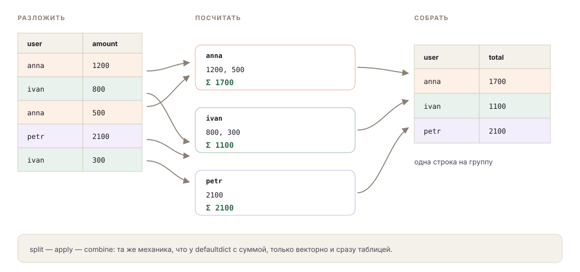

groupby: разложить — посчитать — собрать Та же механика, что у dict-аккумулятора, только векторно и сразу таблицей
В главе 02 мы считали суммы по пользователям через словарь. groupby делает
то же самое: раскладывает строки по ключу, считает в каждой группе и собирает результат.
Называется это split-apply-combine.
01Зачем это backend-разработчику
- Отчёты по группам: сумма заказов по пользователям, средний чек по городам, число событий по дням.
- Аналитика в коде: когда данные уже в DataFrame, groupby быстрее и короче, чем цикл со словарём.
- Прямой мост в SQL:
groupby— этоGROUP BY,agg— агрегатные функции,filter—HAVING. - Собеседование: «чем agg отличается от transform», «size или count», «как найти топ по группам».
02Ассоциация-якорь: три шага конвейера
Разложить — посчитать — собрать. Сначала строки раскладываются по лоткам с ярлыками («anna», «ivan», «petr»). Потом в каждом лотке считается своё число. Потом лотки собираются в новую таблицу: одна строка на группу.
Это тот же блокнот из главы 02: totals[user] += amount, только
groupby делает это сразу для всех групп и умеет больше агрегатов.
03Ассоциативный ряд: восемь звеньев
- groupbyобъект «разложено по ключу»
- sizeстрок в группе
- sum / meanагрегат по колонке
- aggнесколько агрегатов сразу
- as_index=Falseобычная таблица на выходе
- transformрезультат той же длины
- filterоставить группы по условию
- sort_valuesтоп по агрегату
04Схема: раскладываем, считаем, собираем

defaultdict из главы 02: алгоритм тот же.
05Как это устроено на самом деле
groupby не считает ничего сразу: он возвращает объект-описание — «таблица,
разложенная по ключу». Вычисления запускает следующая операция: sum(),
agg(), size(), transform().
| Операция | Что вернёт | Аналог в SQL |
|---|---|---|
| size() | строк в каждой группе | COUNT(*) |
| ["col"].count() | непустых значений | COUNT(col) |
| ["col"].sum() | сумма по группе | SUM(col) |
| agg([...]) | таблица агрегатов | несколько агрегатов в SELECT |
| transform("mean") | результат длиной с исходник | оконная функция |
| filter(func) | строки групп, прошедших условие | HAVING |
agg против transform
agg уменьшает таблицу: одна строка на группу. transform
возвращает результат той же длины, что исходная таблица, — поэтому его можно добавить колонкой.
Это ровно разница между GROUP BY и оконной функцией.
size и count — не одно и то же
size() считает строки, включая пропуски. count()
считает непустые значения колонки. Если в колонке есть NaN, числа разойдутся.
06Лаборатория: запустить и увидеть
Фрагменты файла snippets/15_groupby_lab.py.
Шаг 1. Разложить по ключу
orders = pd.DataFrame({
"user": ["anna", "ivan", "anna", "petr", "ivan"],
"city": ["Москва", "Казань", "Москва", "Москва", "Казань"],
"amount": [1200, 800, 500, 2100, 300],
})
g = orders.groupby("user")
print(type(g).__name__)
print(g.size())
size() — это уже результат, а не сам объект: до вызова операции ничего не посчитано.
Шаг 2. Посчитать: sum и agg
print(g["amount"].sum()) print(g["amount"].agg(["count", "sum", "mean"]))
Шаг 3. Собрать: as_index=False
print(orders.groupby("user", as_index=False)["amount"].sum())
Шаг 4. Именованная агрегация
summary = orders.groupby("user").agg(
total=("amount", "sum"),
orders=("amount", "count"),
avg=("amount", "mean"),
)
print(summary)
Шаг 5. Несколько ключей
print(orders.groupby(["city", "user"])["amount"].sum())
Результат получает составной индекс — ровно тот MultiIndex, который в главе 02 был кортежом-ключом.
Шаг 6. transform: результат той же длины
orders["user_avg"] = orders.groupby("user")["amount"].transform("mean")
print(orders)
Шаг 7. filter: аналог HAVING
big = orders.groupby("user").filter(lambda group: group["amount"].sum() > 1500)
print(big)
Шаг 8. Сравнение с dict-аккумулятором
totals = defaultdict(int)
for user, amount in zip(orders["user"], orders["amount"]):
totals[user] += amount
print(dict(totals))
print(orders.groupby("user")["amount"].sum().to_dict())
07Мост: GROUP BY, HAVING и окна
GROUP BY — это groupby
SELECT user, SUM(amount) AS total, COUNT(*) AS cnt FROM orders GROUP BY user ORDER BY total DESC;
HAVING — это filter по группам
SELECT user, SUM(amount) AS total FROM orders GROUP BY user HAVING SUM(amount) > 1500;
В pandas то же самое делается через groupby(...).filter(...) — но фильтр
применяется к строкам групп, а не к строкам таблицы, как в WHERE.
transform — это окно
SELECT user, amount,
AVG(amount) OVER (PARTITION BY user) AS user_avg
FROM orders;
Пока это просто «среднее по группе в каждой строке». Полноценные окна — в главе 23, но связь стоит
запомнить: transform не схлопывает таблицу.
08Шесть ошибок, на которых спотыкаются
size() считает строки, count() — непустые значения колонки.
agg схлопывает до одной строки на группу, и присоединить его обратно к исходной таблице нельзя без merge.
transform.df.groupby("a").sum().mean() считает среднее уже от сумм, а не от исходных данных.
По умолчанию groupby выбрасывает строки с NaN в ключе (dropna=True).
dropna=False, если пропуски — отдельная группа.groupby(...).apply(lambda df: ...) на больших таблицах медленнее агрегатов.
agg/transform; apply — в крайнем случае.Агрегаты возвращают группы в порядке появления, а не по величине.
sort_values(ascending=False).head(n).09Вопросы с собеседования
Что такое split-apply-combine?
Схема: разложить строки по группам, применить функцию к каждой группе, собрать результаты. В pandas это groupby() и следующая операция.
Чем agg отличается от transform?
agg уменьшает таблицу до одной строки на группу, transform возвращает результат той же длины, что исходная таблица. Это разница между GROUP BY и оконной функцией.
Чем size отличается от count?
size считает строки группы, count — непустые значения конкретной колонки. При NaN числа разные.
Как сделать HAVING в pandas?
groupby(...).filter(lambda g: условие) — фильтр по группам. Обычная маска — это WHERE, фильтр группы — HAVING.
Как получить топ-3 по сумме?
df.groupby("user")["amount"].sum().sort_values(ascending=False).head(3).
Что происходит с NaN в ключе группировки?
По умолчанию такие строки отбрасываются. dropna=False оставляет их отдельной группой.
Как посчитать несколько агрегатов сразу?
agg(["count", "sum", "mean"]) или именованная агрегация
agg(total=("amount", "sum")).
Чем groupby в pandas отличается от GROUP BY в SQL?
Идея одна. В pandas результат — DataFrame с индексом-группой (или обычной таблицей при as_index=False), в SQL — таблица без индексов.
10Три задачи: сначала своя попытка
01 Сумма и средний чек
По заказам посчитайте для каждого пользователя сумму и средний чек, отсортируйте по сумме.
Показать решение
result = orders.groupby("user")["amount"].agg(["sum", "mean"])
print(result.sort_values("sum", ascending=False))
02 Среднее в каждой строке
Добавьте колонку со средней суммой по группе, не меняя число строк.
Показать решение
orders["user_avg"] = orders.groupby("user")["amount"].transform("mean")
Что важно. transform, а не agg: форма результата совпадает с таблицей.
03 Только крупные группы
Оставьте только пользователей с суммой больше 1500.
Показать решение
big = orders.groupby("user").filter(lambda g: g["amount"].sum() > 1500)
Что важно. Это HAVING: условие применяется к группе, а не к отдельной строке.